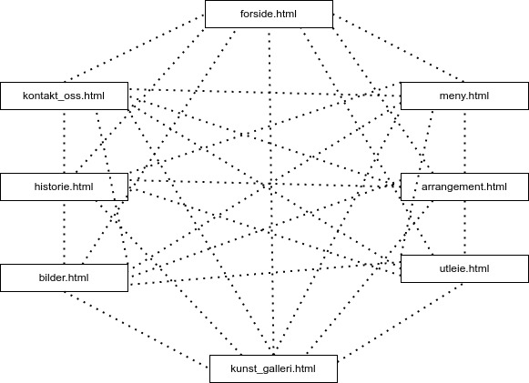
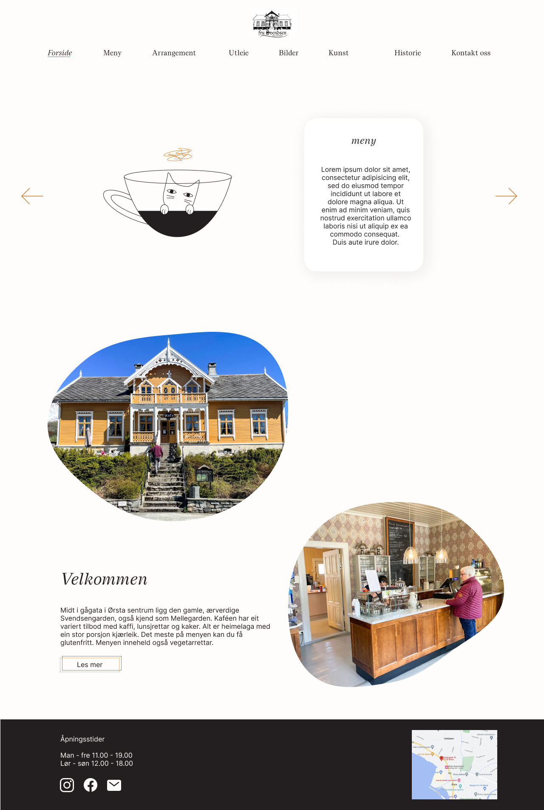
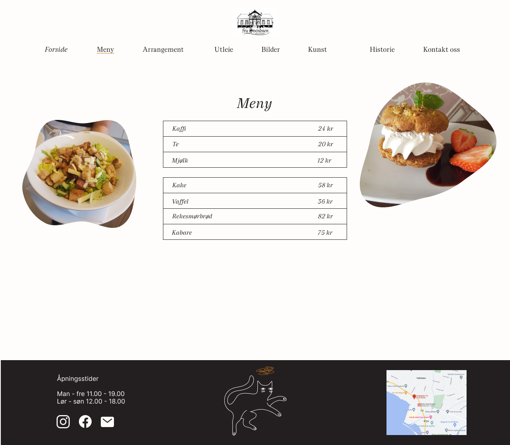
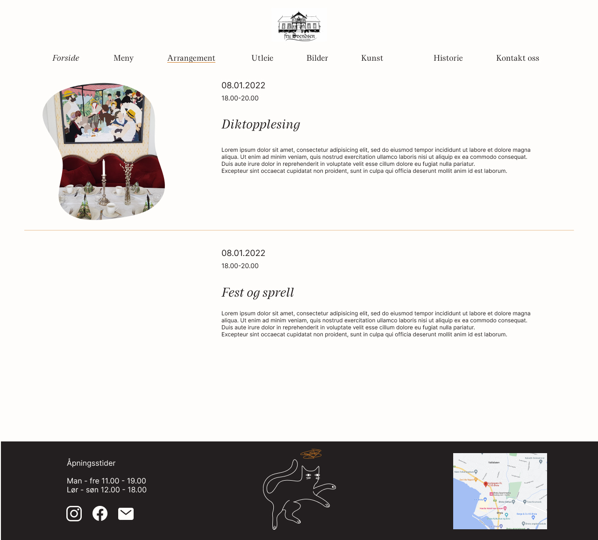
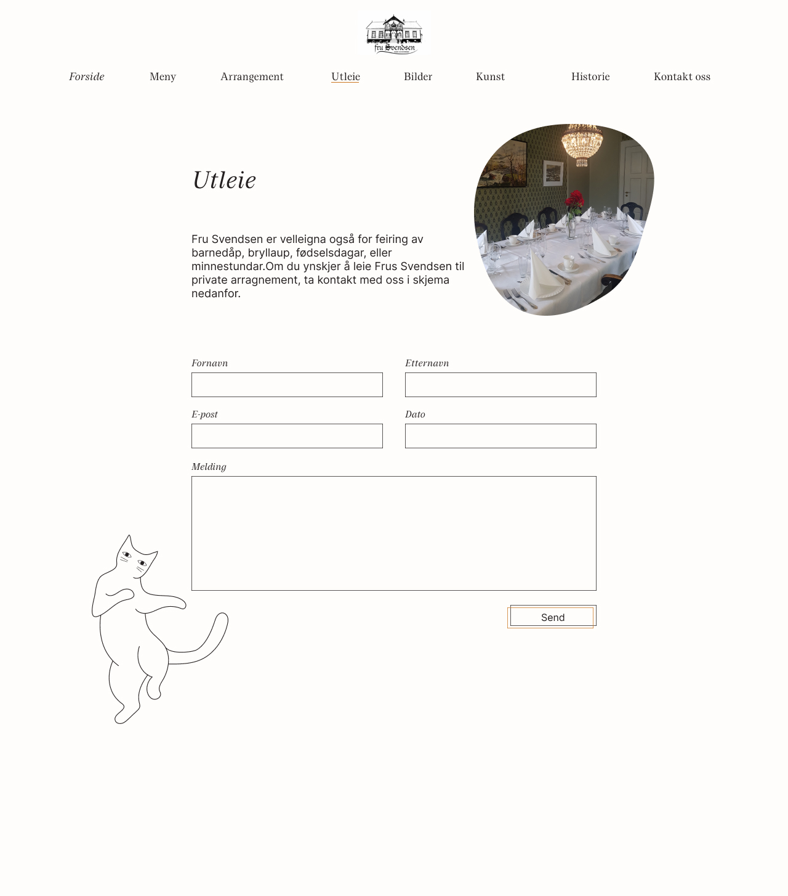
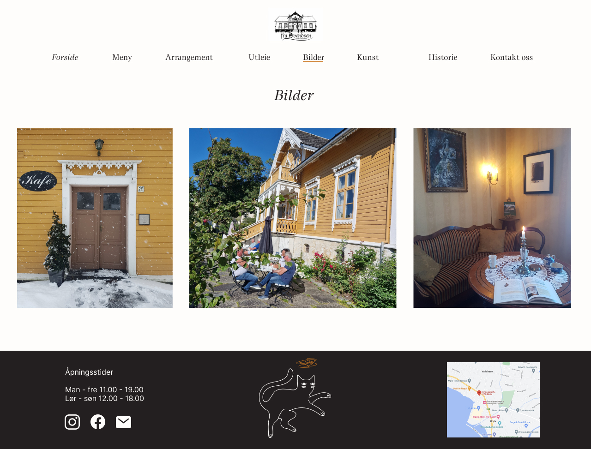
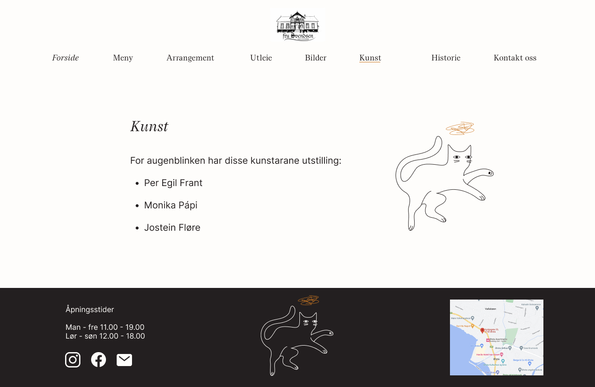
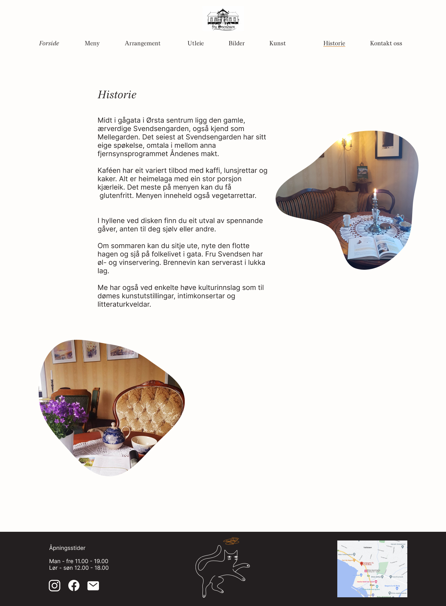
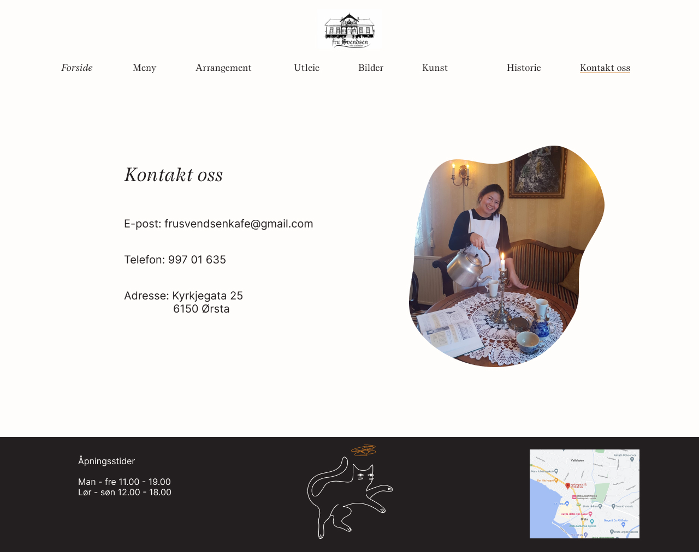

P2 Project Requirements
Lena, Signe, Kaja, Mathias & Ingvild
October 07, 2022
Administrative Details
Client name: Fru Svendsen Kunst og Kulturkafé
webpage name: Fru Svendsen Kunst og Kulturkafé
Contact Person: Monika
Purpose, goals and audience
The website's purpose is to reach out to possible new customers for the
cafe, and also to give information to existing customers. In addition to
information about the cafe we want to show menu, map with location and
possibilities like events and renting the cafe. We also want to give the
customers information about the history behind the cafe as well as
pictures and gallery. The audience is everyone interested in the cafe,
but we assume the main audience will be younger people and tourists.
This is based on the fact that more young people use websites.
Navigation Structure
The navigation structure of the webpage of Fru Svendsen is shown in the
figure below. It can be described as a clique, which means you can
access all pages from every page. This is possible because we will have
a navigation bar that allows us to access them all.

Page Layout and Apperance
After speaking with the owner of Fru Svendsen, we have decided to create
an open, clean webpage with easy access to finding the most important
things the cafe offers. We have focused on displaying the menu as early
as possible, because most people that visits the page, would benefit
from finding out what kind of food and drinks the cafe offers. We have
also included the opening hours in the footer to make it easy to find
out when the cafe is open.
The specific styling for the website that will apply to all pages can be
found below:
-
Font: "Lucette" for the main title (36pt) and navigation bar (18pt),
and “Inter” for the body (16pt)
- Color Scheme:
- Text: Raisin Black #231F20
- Background: Warm White #FFFDFB
- Footer: Raisin Black #231F20
- Grafic elements and user interface components: Ochre #CC7722
-
Shadows: the information element on the slideshow will be displayed
with a shallow black shadow, to highlight the element. X: 6, Y:6,
spread: 6, Blur: 40. Color: Raisin Black #231F20 7%.
- Borders: solid raisin black 0.5
- Body width: 1200px;
-
Links: The logo on the top of the navbar will be a clickable link
which will bring users back to the home page.
-
The menu sections will have drop-down menus that can be clicked and
contain links to the respective pages. Navbar position and apperance:
The nabber will be included at the top of the page to make it
accessible. When hovering over the different tabs within the navbar,
the dash (with the color: #CC7722), will move to the corresponding nav
element.
-
Banner: We do not have a banner, but a slideshow on the "forside".
-
Slideshow: We have a slideshow on the "forside" since we have a lot of
pages on the website, and will give a introduction on what you can do
on the differnt webpages.
-
Footer: Opening hours, social media, cat illustration and a google map
-
Images: All of our images is in "blob" format, with the exeption of:
"bilder" and "kunstgalleri" where the images are squared.
-
Illustrations: We have some illustration of cats and coffe cups. The
cats will be a fun element who tell something about the webpages. E.g.
dancing cats on "Utleie", and a cat in a coffe cup on the "meny".
-
Logo: Our logo will be located in center over the navbar. They do
already have an logo, but it is old and outdated, so we will make a
new one. I think we will have one logo of the house with the name "Fru
Svendsen" under. And another with just the house.
Content
There will be eigth separate pages as follows:
-
Forside - forside.html
The "forside" is the first page that the user will see on the webiste.
The user gets an overview of the site with a slidshow (javascript)
that contain information about the most important webpages, such as
"meny", "arrangement" and "utleie". When the user continues to scroll
down he/she will see some text and images that wishes the user
welcome, and a button "les mer" where you can read more about their
history. On the bottom there is a footer.

-
Meny
At the "meny" page you can find out what the cafe is serving. We will
maybe make the meny into a exel-sheet so the owners of Fru Svendsen
can update the meny if needed. Here is also some picture of delicious
food.

-
Arrangement
At "arrangement" you can see what is about to happend, and was has
happend at Fru Svendsen lately. The newest arrangment will be at the
top, while you can scroll down to see older happenings. A picture that
describes the arrengment will be at the left, and date and time is
over the picture to the lefe. Some text that describes the arrengment
will be at the right.

-
Utleie - utleie.html
This page is mainly a form for getting in contact with Fru Svendsen
about renting the café for private events. First there is a short
introduction about renting the venue. Then there is 4 single line text
fields for first name, last name, e-mail and date. there is also a
textarea where the user write a message about their wish to rent the
venue. The form also have a submit button.

-
Bilder - bilder.html
The "bilder"-page show pictures from the café, the food and the events
happening at fru Svendesen. The page display around 15 pictures. The
goal of the page is to give the user a good overview of the café when
deciding if they are going to visit Fru Svendsen or rent the venue.

-
Kunst- kunst.html
This page will showcase the different artist that are currently
displaying and selling their art at Fru Svendsen Kunst og Kulturkafé.
The user will be able to see what kind of artist they can expect when
going to the cafe, but due to copyright infringement laws, we can't
showcase the art.

-
Historie- historie.hmtl
The "historie" page will give a breif introduction to Fru Svendsen's
story, and give more information about what the cafe can offer its
customers. It will also showcase a few images inside the cafe, to show
potential customers what kind of atmosphere they can expect.

-
Kontakt oss
This page will include contact information (email, address, phone
number) and a google-map in the footer that you can click on. It will
also include a picture of the staff on the right. We have also the
opening hours in the footer now, but have to find a better system to
present the information.

Minimum Requirements
Kaja will be in charge of implementing:
-
A Javascript function that will convert an Excel (or another file
format) into html code, so that Fru Svendsen easily can update the menu
without having to deal a lot with html code, but only need to update the
excel file in the folder
Lena will be in charge of implementing:
- A Javascript function that send booking requests to the cafe.
-
A Javascript function that gives you a popup with the photo you click on
in the gallery page.
Kaja and Lena will together be in charge of implementing:
-
A javascript fuction that will transition between different slides
(slides displaying different sites on the webpage that the customer want
higlighted) on the frontpage nicely.
-
A javascrip code implementing the google maps location of the cafe
For now we have 5 javascript functions so one over the minimum
requirement, but we are not totally sure if everything here is needed to
be implemented with javascript yet.
Plan
List of files and folders:
-
Sider/
- forside.html
- meny.html
- arrangement.html
- utleie.html
- bilder.html
- historie.html
- kontaktOss.html
- galleri.html
-
Bilder/
- bilde1.jpg
- bilde2.jpg
- etc...
-
CSS/
-
Script/
- slideshow.js
- location.js
- readTextFromFile.js
- bookingRequest.js
- popUpPicture.js
| Filename/task |
Description |
In charge |
Deadline |
| standard oppsett for alle html filer |
Navigeringsbar og footer som skal være på alle sider |
Kaja og Lena |
16.10.22 |
| forside.html |
A welcome page, which gives an introduction to Fru Svendsen |
Mathias, (Signe og Ingvild) |
15.11.22 |
| meny.html |
a page that showcases the menu at Fru Svendsen |
Kaja |
15.11.22 |
| arrangement.html |
Description |
Ingvild |
15.11.22 |
| utleie.html |
Information about renting the cafe and form for sending email.
|
Lena |
15.11.22 |
| bilder.html |
Displaying some pictures from the cafe |
Signe |
15.11.22 |
| historie.html |
showing history about the cafe |
Signe |
15.11.22 |
| kontakt_oss.html |
Showing location and giving contact information |
Ingvild |
15.11.22 |
| style.css |
Contains the style of the whole webpage |
Everyone |
15.11.22 |
| slideshow.js |
Slideshow for frontpage |
Mathias |
15.11.22 |
| location.js |
Showing google maps location for the cafe |
Mathias |
15.11.22 |
| readtextfromfile.js |
Reads text from file and returns html |
Kaja |
15.11.22 |
| bookingrequest.js |
Sends email from form on booking request site |
Lena |
15.11.22 |
| popUpPicture.js |
When you click on a picture in the gallery it will pop up and
display bigger
|
Lena |
15.11.22 |